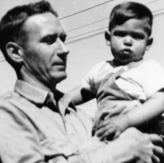
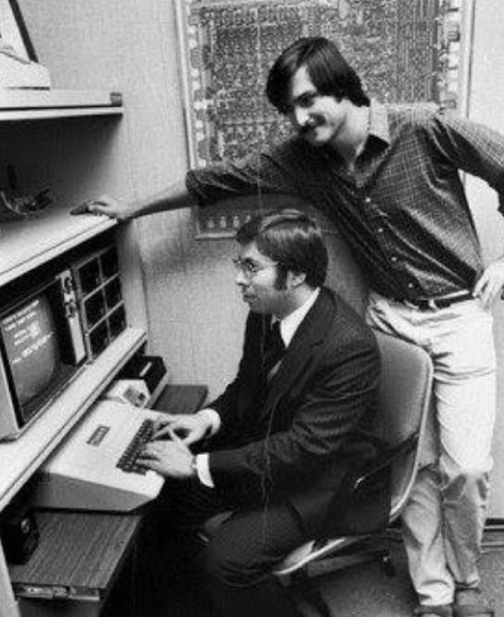
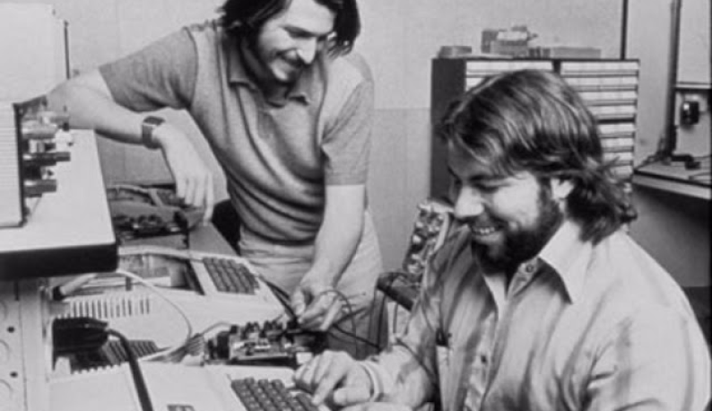
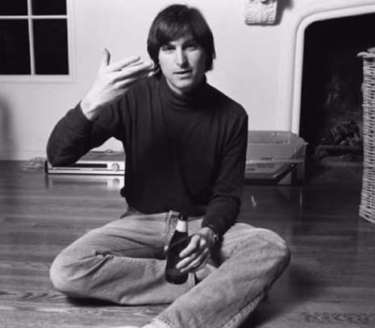
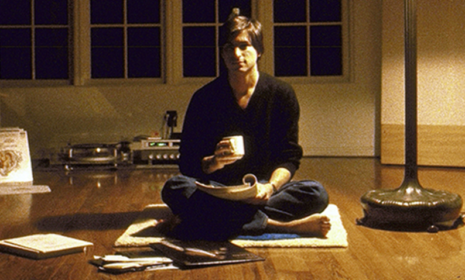

At the age of 11, Steve joined Crittenden Middle School as a young kid where he was bullied and one day, he came home and asked his parents to get him into another school or he would never to go one again. His parents moved to Los Altos where he was admitted into Cupertino Junior High. It was during this time that he became a part of the Heckett-Packard Explorer Club where he came across his first computer. Steve joined Hampstead High School where he got the chance to attend some lectures at the office of Hewlett-Packard.
thenostalgic. | Life Story :
Steve Jobs’ Life Journey
Being nostalgic by reading Steve Jobs’ Life Journey. Not only nostalgic but this is a lesson.

IN 1995

Steve Jobs’ Chilhood
Born on 24th February 1955 and adopted by Paul and Clara Jobs, the
little Steve
grew up in San Francisco with a younger sister, Patty. In the year 1961, the Jobs family
shifted to Mountain View, California. Even as a little kid, Steve showed immense curiosity
towards electronics and machines.
Paul Jobs was a machinist and had a garage of his own
where the father and son used to quench their thirst about experimenting and reconstructing
the electronics.
thenostalgic. | Life Story :
“The doers are the major thinkers. The people that really create the things that change this industry are both the thinker and doer in one person.”
Heckett-Packard Explorer place where he came across his first computer.
- Doers
- Thinkers
- Innovation
- Computer
- Create
Steve’s Brave, Internship, Reed Collage, Calligraphy Class and a lot of thing that formed him
As Jobs was completing his school project and needed some parts to finally assemble it, courageously he asked for them to the president of Hewlett-Packard. Amazed by his bold and brave step, William Hewlett provided him with the parts along with an internship offer at the company. After the high-school phase of Steve Jobs Education, another crucial milestone came into his life when he went to Poland to join the Reed College. Not finding any interest in his undergraduate studies, Jobs decided to drop out of college and take those classes which he found himself inclined towards. He attended calligraphy classes and spent nights at the dorms of his friends.
From Designer to Spiritual Enlightenment.
When he left college, he opted for the position of a video game designer at Atari. A few months later, Jobs travelled to India accompanied by his friend Dan Kottke.


Mystified by the eastern philosophies, he wanted to quench his thirst for spiritual enlightenment. He spent some time in Delhi roaming around barefoot and donning a lungi. He came back to Atari a Buddhist becoming more focused and somewhere grasping his hold on the questions inside him.
thenostalgic. | Life Story:
Steve Jobs Education: Career Lessons to Learn
01 | Focus on your Interests
Being a college dropout, Steve Jobs has always emphasised on how important it is to focus more on exploring your interests and then following the crowd.
02 | Follow Your Passion
Chasing your inner calling can actually take you to the paths that are yet unknown. Jobs always stressed on the importance of following one’s heart and to be in love with what you are doing in life.
03 | The Art of Simplicity
he zenlike ability of Steve Jobs came from his strive to simplify things by cutting off unnecessary stuff in life. Even Apple’s first brochure said, “Simplicity is the ultimate sophistication” reflecting upon his quest for simplicity.
04 | Find the Silver Lining in Your Dark Days
Jobs always saw the instance of getting fired from Apple as a positive thing because he realised the pressure of being successful got swapped with the opportunity of being a beginner.
Steve Jobs’ Old Best Innovations
The first Apple 1976, Apple 2 1977, Apple 3 form 1980, Apple Macintosh, and Maintosh SE

“The people who are crazy enough to think they can change the world are the ones who do.”